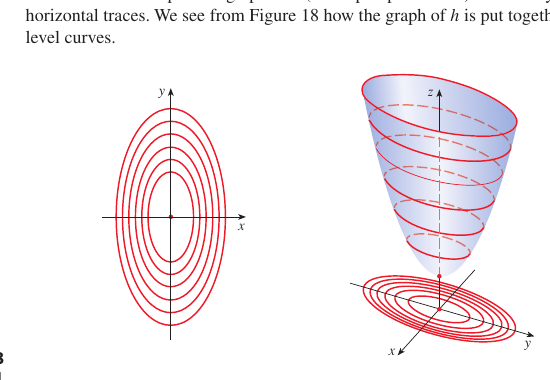
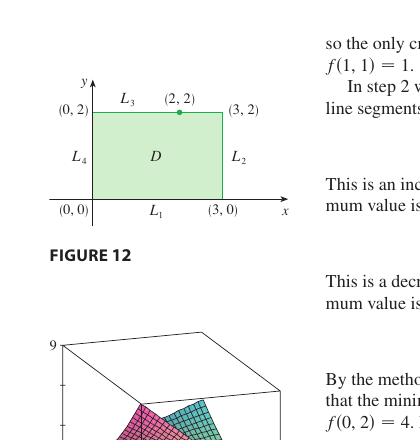

Chapter 14 · Partial Derivatives and Gradients
Functions of several variables, partial derivatives, the gradient, tangent planes, the chain rule, optimisation, and Taylor approximation of surfaces. One object runs through the whole chapter. The gradient is a single vector, and four different things you dot it with answer four different questions.
Dotting $\nabla f$ with a displacement gives the linear approximation, with a velocity the chain rule, with a unit direction the directional derivative, and setting it to zero locates critical points. The running example is the dome $z = 1 - x^2 - y^2$ at the point $(\tfrac12, \tfrac12, \tfrac12)$.
14.1 Functions of Several Variables
2D in 3DIntro. A function of two variables $f : D \subset \mathbb R^2 \to \mathbb R$ has a graph that is a surface $z = f(x, y)$. The level curves are the locus $f(x, y) = k$ for a fixed $k$. Varying $k$ draws a contour map. Close contours mean steep, widely spaced ones mean shallow. A function of three variables $f(x, y, z)$ would graph in four dimensions, so we picture its level surfaces $f(x, y, z) = k$ instead.
2D in 3DStory. The dome $z = 1 - x^2 - y^2$ is a cap over the unit disk, height $1$ at the centre and dropping to $0$ on the circle $x^2 + y^2 = 1$. Its level curves $1 - x^2 - y^2 = k$ are circles of radius $\sqrt{1-k}$, tight near the rim where the cap falls fast and loose near the top where it is nearly flat. We will read every later idea off this one surface and its contour map, starting at the point $(\tfrac12, \tfrac12, \tfrac12)$, which sits on the level curve $k = \tfrac12$.
Compare the dome with three reference shapes. The bowl $f = x^2 + y^2$ has circular level curves and one low point. The saddle $f = x^2 - y^2$ has hyperbola level curves and the plane $f = x + y$ has parallel straight lines.

2D in 3DPractice. Sketch the level curves of $f = x^2 + 4y^2$ at $k = 1, 4, 9$ and say which direction the contours bunch in. Find the domain of $f = \ln(y - x^2)$ and shade it.
14.2 Limits and Continuity
2DIntro. The statement $\lim_{(x,y) \to (a,b)} f(x, y) = L$ means $f \to L$ along every path that approaches $(a, b)$ inside the domain. To show a limit fails, find two paths that give different limits. Common ones are lines $y = mx$ and parabolas $y = x^2$ or $x = y^2$. A polar substitution $x = r\cos\theta$, $y = r\sin\theta$ helps when the value depends only on $r \to 0$.
1D in 2DStory. Agreement along straight lines does not settle it. For $f = \dfrac{xy^2}{x^2 + y^4}$ every line $y = mx$ sends $f \to 0$, yet along the parabola $x = y^2$ the value is $\tfrac12$. The limit exists only when every path agrees, and one disagreeing path is enough to rule it out.
$f$ is continuous at $(a, b)$ when $\lim_{(x,y) \to (a,b)} f(x, y) = f(a, b)$. Polynomials and rational functions are continuous on their domains.
2DPractice. Use polar coordinates on $\lim_{(x,y)\to(0,0)} \dfrac{x^3 + y^3}{x^2 + y^2}$. Show $\lim_{(x,y)\to(0,0)} \dfrac{xy^3}{x^2 + y^6}$ does not exist even though every straight line gives $0$.
14.3 Partial Derivatives
1D in 3DIntro. Freeze one variable and the surface becomes a curve. The partial derivative is the slope of that curve.
Likewise $f_y$ holds $x$ fixed. The notations $\partial f/\partial x$, $f_x$, and $\partial z/\partial x$ all mean the same thing. Geometrically $f_x$ is the slope of the trace cut by $y = $ const, and $f_y$ the slope of the trace cut by $x = $ const.
1D in 3DStory. On the dome the trace $y = \tfrac12$ is the parabola $z = \tfrac34 - x^2$ with slope $f_x = -2x$, equal to $-1$ at $x = \tfrac12$. By symmetry $f_y = -1$ there too. The next section combines these two slopes into a plane, and the section after that into a vector.
Higher partials repeat the process, giving $f_{xx}$, $f_{xy} = (f_x)_y$, $f_{yx}$, and $f_{yy}$. Clairaut's theorem says the mixed partials agree, $f_{xy} = f_{yx}$, whenever both are continuous. Both measure the same second difference of $f$ over a small rectangle, one stepping in $x$ first and the other in $y$ first.
1D in 3DPractice. Find $f_x$ and $f_y$ for $f = x^4 y^2 - 10x^2 y + 7y - 3$. For $f = e^x\sin y$ check that $f_{xy} = f_{yx}$.
14.4 Tangent Planes and Linear Approximations
1DOne dimension first. In one variable the tangent line at $a$ is the best linear approximation, $L(x) = f(a) + f'(a)(x - a)$. Concavity decides the sign of the error. Concave down puts the tangent above the curve, so $L$ overestimates, and concave up puts it below. The same fact carries to two variables.
2D in 3DLift to a surface. Two traces give two tangent lines, and the plane through both is the tangent plane.
Cut with $y = y_0$ to get the trace $z = f(x, y_0)$ whose tangent line is $z - z_0 = f_x(x - x_0)$. Cut with $x = x_0$ to get the other tangent line $z - z_0 = f_y(y - y_0)$. The plane holding both is the formula above. The linearisation $L(x, y) = f(a, b) + f_x(a, b)(x - a) + f_y(a, b)(y - b)$ is that same plane written as a function, and its error vanishes faster than $|\Delta\vec x|$.
2D in 3DStory. At $(\tfrac12, \tfrac12)$ the dome has $f_x = f_y = -1$ and $z_0 = \tfrac12$, so the tangent plane is $z = \tfrac32 - x - y$. The dome bends down in every direction, so the plane lies above the surface and the linearisation overestimates. A saddle bends up one way and down the other, so its tangent plane cuts through the surface and the estimate is high in some directions and low in others.
The hypothesis is continuous partials. Merely having $f_x$ and $f_y$ exist at a point is not enough for differentiability, or even for continuity. For $f(x,y)=\dfrac{xy}{x^2+y^2}$ with $f(0,0)=0$, both partials exist at the origin, yet $f$ is not even continuous there.
Total differential. The differential $dz = \dfrac{\partial z}{\partial x}\,dx + \dfrac{\partial z}{\partial y}\,dy$ estimates the change $\Delta z \approx dz$. Here $dz$ is the rise along the tangent plane and $\Delta z$ is the true rise on the surface. Their gap is second-order small, and for the dome it is the overestimate just described.
2D in 3DPractice. Find the tangent plane to $x^2 + 2y^2 + 3z^2 = 21$ at $(2, 2, 1)$. Find the linearisation of $f = \sqrt{20 - x^2 - 7y^2}$ at $(2, 1)$ and estimate $f(1.95, 1.08)$. Say whether your estimate runs high or low by checking the bend.
14.5 The Chain Rule
1D in 3DIntro. Walk a path on the surface and the chain rule is the gradient dotted with your velocity. With $z = f(x, y)$, $x = g(t)$, $y = h(t)$,
Why. In a small time $dt$ your position shifts by $dx = x'\,dt$ and $dy = y'\,dt$. Each shift changes the height by its slope times its step, $f_x\,dx$ from the $x$ move and $f_y\,dy$ from the $y$ move, and to first order the two contributions just add.
The general version branches one level deeper. With $x = g(s, t)$ and $y = h(s, t)$,
A tree diagram makes the bookkeeping safe. Branches run from $z$ to $x$ and $y$, then on to $s$ and $t$, and you sum the products along every path.
1D in 3DStory. Along the diagonal $x = t$, $y = t$ the dome height is $z = 1 - 2t^2$. The chain rule gives $\dfrac{dz}{dt} = \nabla f \cdot \langle 1, 1\rangle = -4t$, which agrees with differentiating $1 - 2t^2$ directly. The same gradient, dotted now with a velocity instead of a displacement, gives the rate of change along the path.
Implicit differentiation. If $F(x, y, z) = 0$ defines $z$ as a function of $x$ and $y$, differentiate with the chain rule, remembering $z$ depends on $x$ and $y$. Solving gives, wherever $F_z \ne 0$,
1D in 3DPractice. For $z = x^2 y$ with $x = r\cos\theta$, $y = r\sin\theta$, find $\partial z/\partial\theta$. For $w = f(x, y)$ with $x = s + t$ and $y = s - t$, show $w_s + w_t = 2f_x$.
14.6 Directional Derivatives and the Gradient Vector
2D in 3DIntro. Collect the two partials into one vector and the directional derivative is that vector dotted with a unit direction.
Because $D_{\vec u} f = |\nabla f|\cos\theta$, the slope is largest along $\nabla f$, zero across it (along a level curve), and most negative against it. So $\max_{\vec u} D_{\vec u} f = |\nabla f|$, reached at $\vec u = \nabla f/|\nabla f|$. The gradient is perpendicular to level curves in $\mathbb R^2$ and to level surfaces in $\mathbb R^3$.
$D_{\vec u}f=\nabla f\cdot\vec u$ requires $\vec u$ to be a unit vector. If you are handed a direction $\vec v$ that is not unit, say $\vec v=\hat\imath+\hat\jmath$, normalize it first as $\vec u=\vec v/|\vec v|$. Skipping this rescales the answer by $|\vec v|$.
2D in 3DTangent vectors sweep the tangent plane. Slicing the surface with the vertical plane $y = y_0$ gives a trace whose tangent vector is $\langle 1, 0, f_x\rangle$, and the slice $x = x_0$ gives $\langle 0, 1, f_y\rangle$. Slicing in the unit direction $\vec u = \langle\cos\theta, \sin\theta\rangle$ gives the tangent vector $\langle\cos\theta,\ \sin\theta,\ D_{\vec u}f\rangle$. As $\theta$ turns this vector sweeps out the tangent plane of 14.4, which is precisely the set of all tangent vectors at the point.
2D in 3DStory, the gradient four ways. At $(\tfrac12, \tfrac12)$ the dome gradient is $\nabla f = \langle -1, -1\rangle$. Dot it with a small displacement and you rebuild the tangent plane of 14.4. Dot it with the velocity $\langle 1, 1\rangle$ and you recover the chain rule rate $-2$ of 14.5. Dot it with the unit direction $\vec u = \tfrac{1}{\sqrt2}\langle 1, 1\rangle$ and the slope under your feet is $-\sqrt2$, the steepest descent, since $\langle -1, -1\rangle$ points straight downhill. Step perpendicular, along $\tfrac{1}{\sqrt2}\langle 1, -1\rangle$, and the slope is $0$, which is the level curve $k = \tfrac12$ through the point. Four questions, one vector.
2DStory, the gradient does not aim at the origin. For $f = x^2 + 3y^2$ the level curves are ellipses and $\nabla f = \langle 2x, 6y\rangle$. At $(1, 1)$ the gradient is $\langle 2, 6\rangle$ while the position vector is $\langle 1, 1\rangle$, not parallel. The gradient is perpendicular to the level curve through the point, and it points toward the origin only when the level curves are circles.
2D in 3DLevel surfaces. The tangent plane to $F(x, y, z) = k$ at $(x_0, y_0, z_0)$ is
This is the same fact as 14.4. The graph $z = f(x, y)$ is the level set $F = z - f(x, y) = 0$, so $\nabla F = \langle -f_x, -f_y, 1\rangle$ and the formula collapses back to $z - z_0 = f_x(x - x_0) + f_y(y - y_0)$.
A function of three variables has no graph to draw, so watch its level surfaces instead. Below, $f(x, y, z) = x^2 + 2y^2 + z^2$ and the surface $f = k$ swells and shrinks as $k$ varies. At every point $\nabla f = \langle 2x, 4y, 2z\rangle$ is normal to the level surface, hence normal to its tangent plane.
2D in 3DPractice. Find the directional derivative of $f = x^2 y^3$ at $(1, 2)$ along $\vec v = \hat\imath + \hat\jmath$. Find the maximum rate of change of $f = x + y/z$ at $(1, 1, 1)$ and the direction it occurs. Using $f = x^2 + 3y^2$, find a point where the gradient is genuinely not aimed at the origin and confirm it by sketch.
14.7 Maximum and Minimum Values
1DOne dimension first. In one variable a critical point has $f'(a) = 0$ and the second derivative classifies it, positive for a minimum, negative for a maximum, zero inconclusive. In two variables a surface can curve up in one direction and down in another, so a single number must be replaced.
2D in 3DLift to a surface. A critical point has $\nabla f = \vec 0$, and the second derivatives test classifies it.
- $D > 0$ and $f_{xx} > 0$ gives a local minimum.
- $D > 0$ and $f_{xx} < 0$ gives a local maximum.
- $D < 0$ gives a saddle point.
- $D = 0$ is inconclusive.
2D in 3DStory, the test by shapes. The downward elliptic paraboloid $z = 1 - 3x^2 - y^2$ drops fastest along $x$ and slowest along $y$, two perpendicular special directions aligned with the axes. Turned $45^\circ$ it becomes $z = 1 - 2x^2 - 2xy - 2y^2$. The shape is unchanged, the special directions have rotated, and the cross term $-2xy$ records the rotation. The test reads only the signs of the two curvatures along the special directions. Both downward is a maximum, both upward a minimum, one of each a saddle. The dome $z = 1 - x^2 - y^2$ is the round case with no special direction.
2D in 3DStory, the natural saddle. Build $z = x^2 - y^2$ from its slices. The cut $y = 0$ is the upward parabola $z = x^2$, the cut $x = 0$ is the downward parabola $z = -y^2$, and the level set $z = 0$ is the pair of lines $y = \pm x$. Up one way and down the perpendicular way is exactly $D < 0$. The example $f = x^3 - 3x + y^2$ is instructive because adding $y^2$ turns the one variable maximum of $x^3 - 3x$ at $x = -1$ into a saddle of the surface.
Hessian. The matrix $H = \begin{pmatrix} f_{xx} & f_{xy} \\ f_{xy} & f_{yy}\end{pmatrix}$ holds the second-order data. Its eigenvalues are the two special curvatures, $D = \det H$ is their product, and the eigenvectors are the special directions. Both eigenvalues positive is a minimum, both negative a maximum, opposite signs a saddle.
2DAbsolute extrema. By the Extreme Value Theorem a continuous $f$ on a closed bounded $D$ attains its max and min. Find the interior critical points, walk the boundary as a one variable problem, and compare all candidates.

2D in 3DPractice. Classify the critical points of $f = x^4 + y^4 - 4xy + 1$. Confirm that $f = x^3 - 3x + y^2$ has a saddle where the one variable cut had a maximum. Find the absolute max and min of $f = x^2 + y^2 - 2x$ on the disk $x^2 + y^2 \le 4$.
Taylor Approximation for Surfaces
2D in 3DNear $(x_0, y_0)$, the degree 2 Taylor approximation is
The linear terms give the tangent plane of 14.4 and the quadratic terms are set by the Hessian. At a critical point the linear terms vanish, so the surface is locally the graph of the quadratic part, a quadric surface, and its type is what the second derivatives test reads off.
2D in 3DAt a critical point. Take $f = x^3 - 3x + y^2$ from 14.7. At the critical point $(1, 0)$, $f = -2$ and $H = \begin{pmatrix}6&0\\0&2\end{pmatrix}$, so the degree 2 approximation is $Q = -2 + 3h^2 + k^2$, an upward elliptic paraboloid. At $(-1, 0)$, $f = 2$ and $H = \begin{pmatrix}-6&0\\0&2\end{pmatrix}$, giving $Q = 2 - 3h^2 + k^2$, a saddle. The figure draws both local quadrics against the surface. Near each critical point the two are indistinguishable, which is the second derivatives test in geometric form.
2D in 3DEigenvectors and level curves. The level curves of the local quadric are ellipses at a maximum or minimum and hyperbolas at a saddle, and in both cases their axes are the Hessian eigenvectors. Rotating the surface rotates the eigenvectors with those axes and introduces a cross term in the quadratic, while the eigenvalues, and hence $D = \det H$, are unchanged. The animations below rotate the model quadrics $z = 1 - 3x^2 - y^2$ and $z = x^2 - y^2$ through $45^\circ$.
2D in 3DPractice. Compute the second-order Taylor approximation of $f = e^{xy}$ near $(0, 0)$, then of $f = \sqrt{20 - x^2 - 7y^2}$ near $(2, 1)$, and match the quadratic part to the bend found in 14.4.
14.8 Lagrange Multipliers
1D in 2DIntro. Optimise $f(x, y)$ along a constraint curve $g(x, y) = k$. At a constrained best the level curve of $f$ just touches the constraint curve, so their normals line up and $\nabla f \parallel \nabla g$.
Solve the system, evaluate $f$ at every candidate, and compare. With two constraints in $\mathbb R^3$ the gradient lies in the plane of the two normals, $\nabla f = \lambda\nabla g + \mu\nabla h$.
1D in 2DStory. Maximise and minimise $f = xy$ on $x^2 + y^2 = 8$. The system $\langle y, x\rangle = \lambda\langle 2x, 2y\rangle$ forces $x^2 = y^2$, so $2x^2 = 8$ and $x = \pm 2$. The maximum is $f = 4$ at the same-sign points and the minimum is $-4$ at the opposite-sign ones. The figure shows the same idea with $\nabla f$ and $\nabla g$ turning together and aligning only where the level curve kisses the constraint.
Worked examples
Classify the critical points of $f(x, y) = x^4 + y^4 - 4xy + 1$.
$f_x = 4x^3 - 4y = 0$ gives $y = x^3$. $f_y = 4y^3 - 4x = 0$ gives $x = y^3 = x^9$, so $x(x^8 - 1) = 0$, with critical points $(0, 0)$, $(1, 1)$, $(-1, -1)$.
$f_{xx} = 12x^2$, $f_{yy} = 12y^2$, $f_{xy} = -4$, so $D = 144 x^2 y^2 - 16$.
$D(0, 0) = -16 < 0$, so the origin is a saddle. $D(\pm 1, \pm 1) = 128 > 0$ with $f_{xx}(\pm 1, \pm 1) = 12 > 0$, so both are local minima with value $f = -1$.
A maximum that becomes a saddle. $f(x, y) = x^3 - 3x + y^2$.
$f_x = 3x^2 - 3 = 0$ gives $x = \pm 1$, and $f_y = 2y = 0$ gives $y = 0$, so the critical points are $(1, 0)$ and $(-1, 0)$.
$f_{xx} = 6x$, $f_{yy} = 2$, $f_{xy} = 0$, so $D = 12x$.
At $(1, 0)$, $D = 12 > 0$ and $f_{xx} = 6 > 0$, a local minimum. At $(-1, 0)$, $D = -12 < 0$, a saddle. The one variable function $x^3 - 3x$ has a local maximum at $x = -1$, but adding $y^2$ lets the surface climb in the $y$ direction there, and up one way with down the other is a saddle.
Absolute extrema on a rectangle. $f(x, y) = x^2 - 2xy + 2y$ on $R = [0, 3] \times [0, 2]$.
Interior critical point from $f_x = 2x - 2y = 0$ and $f_y = -2x + 2 = 0$, giving $x = 1$, $y = 1$, with $f(1, 1) = 1$.
Boundary pieces.
On $L_1$, $y = 0$, $0 \le x \le 3$, $f = x^2$ with extrema $0$ at $x = 0$ and $9$ at $x = 3$.
On $L_2$, $x = 3$, $0 \le y \le 2$, $f = 9 - 4y$ decreasing, extrema $9$ at $y = 0$ and $1$ at $y = 2$.
On $L_3$, $y = 2$, $0 \le x \le 3$, $f = (x - 2)^2$ with min $0$ at $x = 2$ and max $4$ at $x = 0$.
On $L_4$, $x = 0$, $0 \le y \le 2$, $f = 2y$ with min $0$ at $y = 0$ and max $4$ at $y = 2$.
Candidate values are $0$ at $(0,0)$ and $(2,2)$, then $1$, then $4$ at $(0,2)$, then $9$ at $(3,0)$. The absolute max is $9$ at $(3, 0)$ and the absolute min is $0$ at $(0, 0)$ and $(2, 2)$.
Absolute extrema on a disk. Same $f(x, y) = x^2 - 2xy + 2y$ on the closed disk $D = \{x^2 + y^2 \le 4\}$.
Interior critical point $(1, 1)$ as before, with $f(1, 1) = 1$.
On the boundary $x^2 + y^2 = 4$ parametrise $x = 2\cos t$, $y = 2\sin t$, $0 \le t \le 2\pi$, so $g(t) = 4\cos^2 t - 8\cos t\sin t + 4\sin t = 2 + 2\cos 2t - 4\sin 2t + 4\sin t.$ Then $g'(t) = -4\sin 2t - 8\cos 2t + 4\cos t = 0$ has four solutions in $[0, 2\pi)$, $t \approx 0.87,\ 2.42,\ 4.26,\ 5.95$, giving $f \approx 0.78,\ 8.86,\ -5.98,\ 4.74$. Comparing with the interior value $f(1,1)=1$, the absolute maximum is $\approx 8.86$ at $\approx (-1.50,\ 1.32)$ and the absolute minimum is $\approx -5.98$ at $\approx (-0.88,\ -1.80)$. A closed boundary loop has no endpoints, so every candidate is either the interior critical point or a boundary critical point.
Practice problems
- Find the domain of $f(x, y) = \ln(y - x^2)$.
- Evaluate $\displaystyle\lim_{(x,y) \to (0,0)} \dfrac{x^3 + y^3}{x^2 + y^2}$ using polar coordinates.
- Find $f_x$ and $f_y$ for $f(x, y) = x^4 y^2 - 10 x^2 y + 7 y - 3$.
- Find the tangent plane to $x^2 + 2y^2 + 3z^2 = 21$ at $(2, 2, 1)$.
- Find the linearisation of $f(x, y) = \sqrt{20 - x^2 - 7 y^2}$ at $(2, 1)$ and use it to estimate $f(1.95, 1.08)$. Say whether the estimate runs high or low.
- If $w = f(x, y)$ with $x = s + t$ and $y = s - t$, show $w_s + w_t = 2 f_x$.
- Find $\partial z / \partial \theta$ for $z = x^2 y$, $x = r\cos\theta$, $y = r\sin\theta$.
- Find the directional derivative of $f(x, y) = x^2 y^3$ at $P(1, 2)$ in the direction of $\vec v = \hat\imath + \hat\jmath$.
- Find the maximum rate of change of $f(x, y, z) = x + y/z$ at $(1, 1, 1)$.
- Find and classify the critical points of $f(x, y) = x^4 + y^4 - 4xy + 1$.
- Use Lagrange multipliers to find the maximum and minimum values of $f(x, y) = x^2 + y^2$ subject to $xy = 1$.
- Compute the second-order Taylor approximation of $f(x, y) = e^{xy}$ near $(0, 0)$.
Strategies
Showing a limit does not exist. Find two paths with different limits. Standard choices are $y = mx$, $y = mx^2$, $x = y^2$. For $\dfrac{x^a y^b}{x^c + y^d}$ try $y = kx^{c/d}$.
Differentiability (sufficient condition). If $f_x, f_y$ exist near $(a, b)$ and are continuous at $(a, b)$, then $f$ is differentiable there, hence continuous.
Tangent plane, linearisation, differential. Three forms of one object. The plane $z = z_0 + f_x(x - x_0) + f_y(y - y_0)$, the function $L(x, y)$ equal to its right side, and the differential $dz = f_x\,dx + f_y\,dy$.
Tangent plane to a level surface. For $F(x, y, z) = k$ at $P_0$ the plane is $\nabla F(P_0)\cdot\langle x - x_0, y - y_0, z - z_0\rangle = 0$ and the normal line is $\vec r(t) = P_0 + t\nabla F(P_0)$.
Chain rule tree. Branch from $z$ to its direct inputs, then to theirs. $\partial z/\partial s$ is the sum of products along every path from $z$ to $s$.
Absolute extrema on a closed bounded region.
- Solve $f_x = f_y = 0$ for interior critical points and evaluate $f$ at each.
- Parametrise each boundary piece, reduce $f$ to one variable, and find its extrema.
- Evaluate $f$ at the vertices.
- Compare all candidates.
Lagrange procedure. Solve $\nabla f = \lambda\nabla g$ together with $g = k$, evaluate $f$ at every solution, and compare. If the constraint set is not closed and bounded, also check behaviour at infinity. With two constraints, $\nabla f = \lambda\nabla g + \mu\nabla h$.